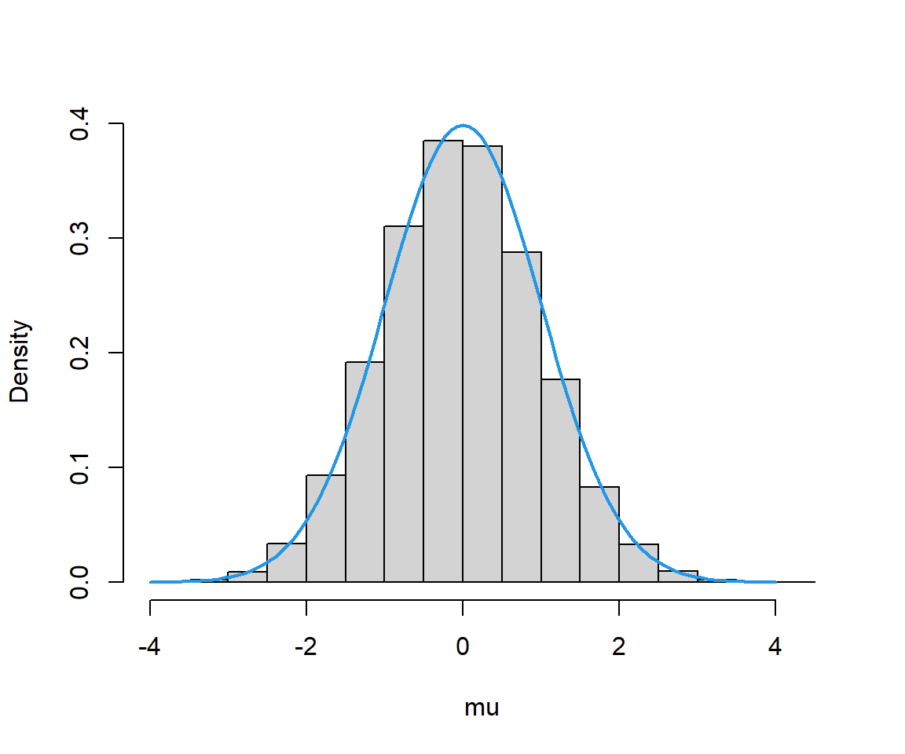

Calcul stochastique
2021
Chapitre 1 Rappel sur le calcul des probabilités
1.1 Notion de probabilité
Une notion basique dans la théorie des probabilités est l’expérience aléatoire dont on ne connait pas son résultat en avance. L’ensemble de tous les résultats de l’expérience est l’ensemble des possibles ou encore l’univers et noté \(\Omega\).
Un évènement est un sous ensemble de l’univers.
On donne quelques exemples:
1. Si l’expérience consiste à jeter une pièce de monnaie, alors \(\Omega=\{P,F\}\).
2. Si l’expérience consiste à jeter un dé cubique dont ses faces sont numérotées de 1 à 6, alors \(\Omega=\{1,2,3,4,5,6 \}\).
Pour chaque évènement \(E\) de l’univers \(\Omega\), on définit un nombre \(P(E)\) qui satisfait les axiomes suivants:
- Axiome 1: \(0 \leq P(E) \leq 1\);
- Axiome 2: \(P(\Omega)=1\);
- Axiome 3: Pour toute séquence des évènements \(E_1 , E_2, \ldots , E_n\) qui sont mutuellement exclusifs (\(E_i \cap E_j=\emptyset , \; \forall \; i \neq j\) et \(\displaystyle{\bigcup\limits_{i=1}^nE_i=\Omega}\)), on a \[ P \left(\bigcup\limits_{i=1}^nE_i \right)=\sum_{i=1}^n P(E_i) \]
Quelques conséquences de ces axiomes sont tirées:
- Si \(E \subset F\), alors \(P(E) \leq P(F)\).
- \(P ( \bar{E})=1-P(E)\) où \(\bar{E}\) est le complémentaire de \(E\).
- \(P \left(\bigcup\limits_{i=1}^nE_i \right)=\displaystyle\sum_{i=1}^n P(E_i)\), lorsque \(E_i\) sont mutuellement exclusifs.
- \(P \left(\bigcup\limits_{i=1}^nE_i \right)\leq\displaystyle \sum_{i=1}^n P(E_i)\) (Inégalité de Boole).
Exemple 1.2 On lance un dé cubique équilibré dont ses faces sont numérotées de 1 à 6.
\(P(\{i \})= \dfrac{1}{6}, \; \forall\, i=1,2,\ldots,6\).
La probabilité d’obtenir un nombre pair est
\(P(\{2,4,6\})= P(\{2 \})+P(\{4 \}) +P(\{6 \}) = \dfrac{1}{2}\).1.1.1 Probabilité conditionnelle
Exemple 1.3 Une urne contient 10 boules numérotées de 1 à 10 indiscernables au toucher. On tire au hasard une boule. Sachant que le numéro de la boule tirée est au moins égale à 5, quelle est la probabilité qu’il soit égale à 10?
Soit \(A\) l’évènement d’avoir une boule portant le numéro 10. Soit \(B\) l’évènement d’avoir une boule portant un numéro supèrieur ou égale à 5. La probabilité demandée est \(P(A|B)\) \[ P(A|B)=\frac{P(A \cap B)}{P(B)}=\frac{P(A)}{P(B)}=\frac{1/10}{6/10}=1/6 \]1.1.2 Indépendance
Si \(A\) et \(B\) deux évènements indépendants, alors \(P(A|B)=P(A)\) et \(P(B|A)=P(B)\).
Exemple 1.4 On lance deux dés cubiques équilibrés numérotés de 1 à 6. Soit \(A\) l’événement d’obtenir une somme égale six et \(B\) désigne l’événement où le premier dé est égal à quatre.
Vérifier que les deux évènements \(A\) et \(B\) sont indépendants.
\(P(A\cap B)=p(\{4,2 \})=1/36\) et \(P(A)=1/6\), \(P(B)=1/6\). Donc \(P(A)\times P(B)=1/6 \times 1/6 =1/36 =P(A\cap B)\). Ainsi, les évènements \(A\) et \(B\) sont indépendants.1.2 Variables aléatoires
Définition 1.3 Soit une expérience aléatoire d’univers \(\Omega\).
Une variable aléatoire \(X\) est une application de l’ensemble \(\Omega\) vers un ensemble de réalisations.
Pour tout évènement \(A\), on \(P(X \in A)=P(X^{-1}(A))\) où \(X^{-1}(A)\) est l’évènement comprenant tous les éléments \(\omega \in \Omega\) tels que \(X(\omega) \in A\).La fonction de répartition \(F\) d’une variable aléatoire \(X\) est définie par \[ F(x)=P(X \leq x)=P(X \in ]-\infty, x]), \; \forall \, x \in \mathbb{R} \] Une variable aléatoire \(X\) est dite discrète si son ensemble des valeurs possibles est dénombrables. Dans ce cas, on a \[ F(x)=\sum_{k \leq x }P(X=k) \] Une variable aléatoire \(X\) est dite continue s’il existe une fonction \(f(x)\), appelée densité de probabilité, telle que \[ P(X\in B)=\int_Bf(x)dx \; \text{ pour tout ensemble }B \] Puisque \(F(x)=\displaystyle \int_{-\infty}^x f(x) dx\), alors \[ f(x)=\frac{d}{dx}F(x) \] La fonction de répartition jointe d’un couple aléatoire \(X\) et \(Y\) est \(F(x,y)=P(X \leq x, Y \leq y)\).
Les fonctions de répartition de \(X\) et \(Y\), \[ F_X(x)=P(X\leq x) \text{ et }F_Y(y)=P(Y\leq y) \] peuvent être déduites de \(F(x,y)\). En effet, \[ F_X(x)=\lim_{y \longrightarrow \infty}F(x,y) \; \text{ et }\;F_Y(y)=\lim_{x \longrightarrow \infty}F(x,y) \] Les variables aléatoires \(X\) et \(Y\) sont indépendantes si \[ F(x,y)=F_X(x) F_Y(y) \] \(X\) et \(Y\) sont continues s’il existe une fonction \(f(x,y)\), dite densité de probabilité jointe, telle que \[ P(X\in A, Y\in B)=\int_A\int_B f(x,y)dxdy\;\; \forall A,B \] La fonction de répartition d’une suite de \(n\) variables aléatoires \(X_1, X_2, \ldots, X_n\) est définie par: \[ F(X_1, X_2, \ldots, X_n)=P(X_1\leq x_1, X_2\leq x_2, \ldots, X_n \leq x_n) \] et sont indépendantes si \[ F(X_1, X_2, \ldots, X_n)=F_{X_1}(x_1)F_{X_2}(x_2)\ldots F_{X_n}(x_n) \]
1.3 Espérance mathématique
Définition 1.4 L’espérance mathématique ou moyenne d’une variavle aléatoire \(X\), notée \(\mathbb{E}(X)\), est définie par:
\[\begin{align*} \mathbb{E}(X) & = \int_{\mathbb{R}}x dF(x)\\ & = \begin{cases} \displaystyle \sum_x xP(X=x)\; \text{si }X \text{ est discrète}\\ \displaystyle \int_{\mathbb{R}} xf(x)dx \; \text{si }X \text{ est continue} \end{cases} \end{align*}\]
De même, on définit l’espérance d’une fonction de \(X\), \(g(X)\), par: \[ \mathbb{E}\left[ g(X)\right]=\int_{\mathbb{R}}x dF_g(x)=\int_{\mathbb{R}}g(x) dF(x) \] L’espérance d’une somme de variables aléatoires est la somme des espérances: \[ \mathbb{E}\left[\sum_{i=1}^n X_i \right]=\sum_{i=1}^n\mathbb{E}(X_i) \] La variance d’une variable aléatoire, \(X\), est définie par \[ \mathbb{V}(X)=\mathbb{E}\left[{(X-\mathbb{E}(X))}^2 \right]=\mathbb{E}(X^2)-{\mathbb{E}(X)}^2 \] Deux variables aléatoires, \(X\) et \(Y\), sont dites non corréllées si leur covariance, définie par: \[ \text{Cov}(X,Y)=\mathbb{E}\left[(X-\mathbb{E}(X))(Y-\mathbb{E}(Y))\right]=\mathbb{E}(XY)-\mathbb{E}(X)\mathbb{E}(Y) \] est nulle. Noter que si \(X\) et \(Y\) sont indépendantes, alors elles sont non corréllées (\(\text{Cov}(X,Y)=0\)).
Propriétés de la covariance
Pour toutes variables aléatoires \(X, Y, Z\) et \(a \in \mathbb{R}\), on a:
1. Cov\((X,X)=\mathbb{V}(X)\) et Cov\((X,Y)=\) Cov$(Y,X) $
2. Cov\((aX,Y)=a\)Cov\((X,Y)\).
3. Cov\((X,Y+Z)=\) Cov\((X,Y)+\) Cov\((X,Z)\).
Une généralisation de la troisième propriétés est donnée par: \[ \text{Cov}\left( \sum_{i=1}^nX_i,\sum_{j=1}^m Y_i \right)=\sum_{i=1}^n \sum_{j=1}^m \text{Cov}(X_i,Y_j) \] Une expression utile pour la variance de la somme des variables aléatoires peut être déduite comme suit: \[\begin{align*} \mathbb{V}\left(\sum_{i=1}^nX_i \right)& =\text{Cov}\left(\sum_{i=1}^nX_i,\sum_{i=1}^nX_i\right)\\ &=\sum_{i=1}^n \sum_{j=1}^n\text{Cov}(X_i,X_j)\\ &=\sum_{i=1}^n\text{Cov}(X_i,X_i)+\sum_{i=1}^n\sum_{i\neq j}\text{Cov}(X_i,X_j)\\ &=\sum_{i=1}^n\mathbb{V}(X_i)+2\sum_{i=1}^n\sum_{j <i} \text{Cov}(X_i,X_j) \end{align*}\]
Définition 1.5 Si \(X_1,X_2,\ldots, X_n\) sont indépendantes et identiquement distribuées, noté \(X_i \sim iid\), d’espérance \(m\) et de variance \(\sigma^2\), alors:
- \(\overline{X}=\displaystyle \frac{1}{n}\sum_{i=1}^n X_i\) est appelée moyenne empirique.
- \(\mathbb{E}(\overline{X})=m\) et \(\mathbb{V}(\overline{X})=\displaystyle \frac{\sigma^2}{n}\).
- Cov\((\overline{X},X_i-\overline{X})=0,\) \(i=1,2,\ldots,n\).
Exemple 1.5 Calculer la variance d’une variable aléatoire \(X\) suivant une loi binomiale de paramètres \(n\) et \(p\).
Puisqu’une telle variable aléatoire représente le nombre de succès dans \(n\) essais indépendants lorsque chaque essai a une probabilité commune p d’être un succès, nous pouvons écrire \[ X=X_1+X_2+\ldots+X_n \] où \(X_i \stackrel{iid}{\sim}B(p)\) telle que\[ X_i=\begin{cases} 1 \text{ si le ième issue est un succés}\\ 0 \text{ sinon} \end{cases} \] Par conséquent, on aura \(\mathbb{V}(X)=\displaystyle \sum_{i=1}^n\mathbb{V}(X_i)\), Or \[\begin{align*} \mathbb{V}(X_i)&=\mathbb{E}(X_i^2)-{\mathbb{E}(X_i)}^2\\ &=\mathbb{E}(X_i)-{\mathbb{E}(X_i)}^2 \text{ car } X_i^2=X_i\\ &= p-p^2= p(1-p) \end{align*}\] Donc \(\mathbb{V}(X)=np(1-p)\).
1.4 Fonctions génératrices des moments
Définition 1.6 La fonction génératrice des moments \(\phi(t)\) de la variable aléatoire \(X\) est définie pour tout \(t \in \mathbb{R}\) par \[\begin{align*} \phi(t)&=\mathbb{E}\left[e^{tX} \right]\\ &= \begin{cases} \displaystyle \sum_x e^{tx}P(X=x)\text{ si } X \text{ est discrète}\\ \displaystyle \int_{\mathbb{R}}e^{tx} f(x)dx \text{ si } X \text{ est continue} \end{cases} \end{align*}\]
\(\phi(t)\) est appelée fonction génératrice des moments car tous les moments de \(X\) peuvent être obtenues par les dérivées successives de \(\phi(t)\). Par exemple
\[\begin{align*} \phi'(t)&=\dfrac{d}{dt}\mathbb{E}\left[e^{tX} \right] \\ &=\mathbb{E}\left[\dfrac{d}{dt}(e^{tX}) \right]=\mathbb{E}\left[Xe^{tX} \right] \end{align*}\]
Par conséquent \(\phi'(0)= \mathbb{E}(X)\).
D’une manière plus générale, \(\phi^n(0)=\mathbb{E}\left( {X}^n\right),\; n \geq 1\).
Une propriété importante des fonctions génératrices des moments est que la fonction génératrice des moments de la somme des variables aléatoires indépendantes est simplement le produit des fonctions génératrices des moments individuelles. Pour voir cela, supposons que \(X\) et \(Y\) sont indépendantes et ont respectivement des fonctions génératrices des moments \(\phi_X(t)\) et \(\phi_Y(t)\). Alors la fonction génératrice des moments de \(X+Y\) est donnée par: \[\begin{align*} \phi_{X+Y}(t)&=\mathbb{E}\left(e^{t(X+Y)} \right)=\mathbb{E}\left(e^{tX}e^{tY)} \right)\\ &=\mathbb{E}\left(e^{tX}\right) \mathbb{E}\left(e^{tY}\right)=\phi_X(t)\phi_Y(t) \end{align*}\]
Exemple 1.6 (Loi Binomiale de paramètres n et p) \[\begin{align*} \phi(t)&=\mathbb{E}\left[e^{tX} \right]=\sum_{k=0}^ne^{tk}C^n_kp^k{(1-p)}^{n-k}\\ &=\sum_{k=0}^nC^n_k{\left(pe^t\right)}^k{(1-p)}^{n-k} \end{align*}\]
Or, d’après la formule de Binôme, on a \[ {(a+b)}^n=\sum_{k=0}^nC_n^ka^kb^{n-k} \] d’où \(\phi(t)={\left( pe^t+(1-p)\right)}^n\) et par conséquent \[ \phi'(t)=n{\left(pe^t+1-p \right)}^{n-1}pe^t \] D’où \(\mathbb{E}(X)=\phi'(0)=np\).
Dérivons une deuxième fois la fonction \(\phi(t)\), on obtient
\[ \phi''(t)=n(n-1){\left(pe^t+1-p \right)}^{n-2}{\left(pe^t\right)}^2+n{\left(pe^t+1-p \right)}^{n-1}pe^t \] En déduit, alors \[ \mathbb{E}(X^2)=\phi''(0)=n(n-1)p^2+np \] Donc, on peut déduire la variance de \(X\). \[ \mathbb{V}(X)=\mathbb{E}(X^2)-\mathbb{E}{(X)}^2=\phi''(0)-{\left( \phi'(0)\right)}^2=np(1-p) \]\[\begin{align*}
\mathbb{E}\left(e^{tX} \right)&=\dfrac{1}{\sqrt{2\pi}}\int_{\mathbb{R}}e^{tx-x^2/2}dx\\
&=\dfrac{1}{\sqrt{2\pi}}\int_{\mathbb{R}}e^{-(x^2-2tx)/2}dx\\
&=e^{t^2/2}\dfrac{1}{\sqrt{2\pi}}\int_{\mathbb{R}}e^{-(x-t)^2/2}dx\\
&= e^{t^2/2}
\end{align*}\]
Si \(Y \sim N(m,\sigma^2)\), alors
\[
\phi_Y(t)=\mathbb{E}\left[e^{t(\sigma X+m)} \right]=\exp\left[\dfrac{\sigma^2t^2}{2}+m \right]
\]
Sous R, on peut déterminer et évaluer les fonctions génératrices des moments en utilisant l’extension MGF qui est téléchargeable depuis l’adresse suivante: https://github.com/alexandernel14/MGF.
Une description de l’installation et l’utilisation de cette extension est donnée comme suit:
# installer 'devtools': install.packages("devtools")
# installer 'MGF' depuis github
#devtools::install_github("alexandernel14/MGF",force = T)
# charger l'extension 'MGF'
library(MGF)
# fonction génératrice de la loi binomiale
mgf("Binomial")[1] "(1-p+p*exp(t))^n"The Moment Generating Function for the Binomial distribution is:
[1] "(1-p+p*exp(t))^n"
The formula for the 1st moment is:
(1 - p + p * exp(t))^(n - 1) * (n * (p * exp(t)))
The value of the 1st moment is:
[1] 4
The formula of the 1st centralized moment is:
(1 - p + p * exp(t))^(n - 1) * (n * (p * exp(t)))/(1 - p + p *
exp(t))^n
The 1st centralized moment's value is:
[1] 4The Moment Generating Function for the Binomial distribution is:
[1] "(1-p+p*exp(t))^n"
The formula for the 2nd moment is:
(1 - p + p * exp(t))^((n - 1) - 1) * ((n - 1) * (p * exp(t))) *
(n * (p * exp(t))) + (1 - p + p * exp(t))^(n - 1) * (n *
(p * exp(t)))
The value of the 2nd moment is:
[1] 18.4
The formula of the 2nd centralized moment is:
((1 - p + p * exp(t))^((n - 1) - 1) * ((n - 1) * (p * exp(t))) *
(n * (p * exp(t))) + (1 - p + p * exp(t))^(n - 1) * (n *
(p * exp(t))))/(1 - p + p * exp(t))^n - (1 - p + p * exp(t))^(n -
1) * (n * (p * exp(t))) * ((1 - p + p * exp(t))^(n - 1) *
(n * (p * exp(t))))/((1 - p + p * exp(t))^n)^2
The 2nd centralized moment's value is:
[1] 2.4[1] "exp(mu*t + 0.5*sigma^2*t^2)"The Moment Generating Function for the Normal distribution is:
[1] "exp(mu*t + 0.5*sigma^2*t^2)"
The formula for the 1st moment is:
exp(mu * t + 0.5 * sigma^2 * t^2) * (mu + 0.5 * sigma^2 * (2 *
t))
The value of the 1st moment is:
[1] 0
The formula of the 1st centralized moment is:
mu + 0.5 * sigma^2 * (2 * t)
The 1st centralized moment's value is:
[1] 0The Moment Generating Function for the Normal distribution is:
[1] "exp(mu*t + 0.5*sigma^2*t^2)"
The formula for the 2nd moment is:
exp(mu * t + 0.5 * sigma^2 * t^2) * (mu + 0.5 * sigma^2 * (2 *
t)) * (mu + 0.5 * sigma^2 * (2 * t)) + exp(mu * t + 0.5 *
sigma^2 * t^2) * (0.5 * sigma^2 * 2)
The value of the 2nd moment is:
[1] 1
The formula of the 2nd centralized moment is:
0.5 * sigma^2 * 2
The 2nd centralized moment's value is:
[1] 11.5 Fonctions caractéristiques
Il existe des variables aléatoires pour lesquelles la fonction génératrice des moments n’existe pas. Dans ce cas, on peut faire recours à la fonction caractéristique définie ci-dessous.Définition 1.7 La fonction caractéristique d’une variable aléatoire \(X\) est la fonction à valeurs complexes définie sur \(\mathbb {R}\) par
\[\begin{align*}\psi_{X}(t)&=\mathbb{E} \left[{e} ^{\mathrm{i} tX}\right]\\ &=\begin{cases} \displaystyle \sum_{i=1}^n {e} ^{\mathrm{i} tX }P(X=x_i) \text{ si } X \text{ est discrète}\\ \displaystyle \int_{\mathbb{R} }e^{\mathrm{i} tx} f(x)\,\mathrm{d} x \text{ si } X \text{ est continue} \end{cases} \end{align*}\] où \(\mathrm{i}=\sqrt{-1}\).
Proposition 1.1 Soit \(X\) une variable aléatoire, \(a\) et \(b\) deux réels. Alors les propriétés suivantes sont toujours vraies :
1. Pour tout \(t \in \mathbb{R}\), \(\left|\psi_X(t)\right| \leq 1\).
2. \(\psi_X(0)=1\).
3. Pour tout \(t \in \mathbb{R}\), \(\psi_X(−t) = \overline{\psi_X(t)}\).
4. Pour tout \(t \in \mathbb{R}\), \(\psi_{aX+b}(t) = e^{\mathrm{i}tb} \psi_X(at)\).
5. \(\psi_X(t)\) est continue sur \(\mathbb{R}\).
Si \(X_1,X_2,\ldots , X_n\) sont des variables indépendantes, alors \[ \psi_{\sum_iX_i}(t)=\prod_i\psi_{X_i}(t) \]
1.6 Espérance conditionnelle - Variance conditionnelle
L’un des concepts les plus utiles de la théorie des probabilités est celui de la probabilité conditionnelle et de l’espérance conditionnelle. La raison est double. Premièrement, dans la pratique, nous nous intéressons souvent au calcul des probabilités et des espérances lorsqu’une information partielle est disponible; par conséquent, les probabilités et les espérances souhaitées sont conditionnelles. Deuxièmement, pour calculer une probabilité , il est souvent extrêmement utile d’abord conditionner une variable aléatoire appropriée.
1.6.1 Densité conditionnelle
Soient \(X\) et \(Y\) deux variables aléatoires de densité jointe \(f(x,y)\).
La densité conditionnelle est par définition \[ {f}_{X|Y=1}(x,y)=\dfrac{P(X=x,Y=1)}{{P}_Y(Y=1)} \] Or, \(P_y(Y=1)=\displaystyle \sum_x P(X=x,Y=1)=p(1,1)+p(2,1)=0.6\). D’où \[ {f}_{X|Y=1}(1,1)=\dfrac{P(X=1,Y=1)}{{P}_Y(Y=1)}=\dfrac{p(1,1)}{{P}_Y(1)}=\dfrac{5}{6} \] \[ {f}_{X|Y=1}(2,1)=\dfrac{P(X=2,Y=1)}{{P}_Y(Y=1)}=\dfrac{p(2,1)}{{P}_Y(1)}=\dfrac{1}{6} \]
1.6.2 Espérance conditionnelle
Une espérance conditionnelle est une expression calculée depuis une distribution conditionnelle. On écrit \(\mathbb{E}\left(Y|X=x \right)\) pour l’espérance de \(Y\) sachant \(X=x\).
Exemple 1.11 On donne \(Y=\begin{cases} 1 \text{ avec une probabilité }\frac{1}{8}\\ 2 \text{ avec une probabilité }\frac{7}{8} \end{cases}\)
et \(X|Y=\begin{cases} 2Y \text{ avec une probabilité }\frac{3}{4}\\ 3Y \text{ avec une probabilité }\frac{1}{4} \end{cases}\)
Déterminer \(\mathbb{E}\left( X|Y=y\right)\).Si \(Y=\), alors \(\left(X|Y= \right)= \begin{cases} 2 \text{ avec une probabilité }\frac{3}{4}\\ 3 \text{ avec une probabilité }\frac{1}{4} \end{cases}\)
D’où \(\mathbb{E}\left( X|Y=1\right)=\displaystyle \sum_x x\mathbb{P}\left( X|Y=1\right)=2\times\frac{3}{4}+3\times \frac{1}{4}=\frac{9}{4}\).
Si \(Y=2\), alors \(\left(X|Y=2 \right)= \begin{cases} 4 \text{ avec une probabilité }\frac{3}{4}\\ 6 \text{ avec une probabilité }\frac{1}{4} \end{cases}\)
D’où \(\mathbb{E}\left( X|Y=2\right)=\displaystyle \sum_x x\mathbb{P}\left( X|Y=2\right)=4\times\frac{3}{4}+6\times \frac{1}{4}=\frac{18}{4}\).
Donc \(\mathbb{E}\left( X|Y=y\right)= \begin{cases} \frac{9}{4} \text{ si }Y=1 \text{ avec une prob} =\frac{1}{8}\\ \frac{18}{4} \text{ si } Y=2 \text{ avec une prob }=\frac{7}{8} \end{cases}\).
Par définition \(\mathbb{E}\left( Y|X=x\right)=\displaystyle \int_{\mathbb{R}}y{f}_{X|Y}(x,y)dy\).
Or \({f}_{X|Y}(x,y)=\dfrac{f(x,y)}{{f}_X(x)}\) avec \[\begin{align*} {f}_X(x)=&\int_1^x\dfrac{2}{xy}dy=\dfrac{2}{x}\biggl[\ln(y) \biggr]_1^x\\ =&\dfrac{2\ln(x)}{x},\;\text{ pour }\; 1<x<e. \end{align*}\] D’où \({f}_{X|Y}(x,y)=\dfrac{2}{xy}\dfrac{x}{\ln(x)}=\dfrac{1}{y\ln(x)}\) pour \(1<y<x\), et par conséquent, \[ \mathbb{E}\left( Y|X=x\right)=\int_1^x \dfrac{y}{y\ln(x)}dy=\dfrac{1}{\ln(x)}\biggl[ y\biggr]_1^x=\dfrac{x-1}{\ln(x)} \]
Propriétés de l’espérance conditionnelle
1. Linéarité: Pour toutes constantes \(a,b\) et \(X,Y\) et \(Z\) des variables aléatoires, \[\mathbb{E}\left(aY+bZ|X=x\right)=a \mathbb{E}\left(Y|X=x\right)+b\mathbb{E}\left(Z|X=x\right)\] 2. Indépendance: Si \(X\) et \(Y\) sont deux variables aléatoires indépendantes, alors \(\mathbb{E}\left(Y|X=x\right)=\mathbb{E}\left(Y\right)\)
3. \(\mathbb{E}\left(g(X)|X=x\right)=\mathbb{E}\left(X\right)\) où \(g\) est une transformation.
4. Espérance totale: \(\mathbb{E}\left(Y\right)=\mathbb{E}\bigl(\mathbb{E}\left(Y|X=x\right)\bigr)\): La moyenne totale est la moyenne des moyennes.
Exemple 1.13 Reprenons l’exemple 1.11.
\(\mathbb{E}\left( X|Y=y\right)= \begin{cases} \frac{9}{4} \text{ avec une prob } =\frac{1}{8}\\ \frac{18}{4} \text{ avec une prob }=\frac{7}{8} \end{cases}\).
Donc, l’espérance totale est:
\(\mathbb{E}\left(X\right)= \frac{9}{4} \times \frac{1}{8} + \frac{18}{4} \times \frac{7}{8} = \frac{135}{32}\)
Exercice 1.1 On jette une pièce de monnaie équilibrée. Soit \(Y\) la variable aléatoire désignant le nombre des lancers avant d’obtenir Face pour la première fois.
- Déterminer la loi de \(Y\) ainsi que son espérance et sa variance.
- Simuler 10 000 réalisations de \(Y\).
- Soit \(\left(X|Y=y\right)\sim \mathcal{P}(\lambda Y)\).
- Calculer \(\mathbb{E}\left(X|Y=y\right)\) et \(\mathbb{E}\left(X\right)\).
- En prenant \(\lambda=2\) et à l’aide des simulations, donner la valeur de \(\mathbb{E}\left(X|Y=y\right)\).
Solution 1. Soit \(P(F)=p\) et \(P(P)=1-p\). On a \((n-1)\) premières épreuves donnant \(P\) et la nième épreuve donne \(F\), et puisque les épreuves sont indépendantes, alors \[ \mathbb{P}\bigl(Y=n \bigr)={(1-p)}^{n}p\;,\;\; n=0,1,2,\ldots \] Donc \(Y\sim G(p)\).
- Soit \(Z=(X|Y=y)\sim \mathcal{P}(\lambda Y)\), \(\mathbb{E}\left(Z\right)=\mathbb{E}\left(X|Y=y\right)= \lambda Y\).
[1] 2.0029La figure suivante donne l’évolution de \(\mathbb{E}\left(X|Y=y\right)\) en fonction du nombre des simulations.
1.6.3 Variance conditionnelle
Similairement à l’espérance conditionnelle, la variance conditionnelle est une variance prise par rapport à une distribution conditionnelle. Étant donné les variables aléatoires \(X\) et \(Y\), soit \(m_X=\mathbb{E}\left(Y|X=x \right)\). La variance conditionnelle \(\mathbb{V}(Y | X = x)\)est définie comme suit:
La variance conditinnelle possède les propriétés suivantes:
Propriétes de la variance conditionnelle
1. \(\mathbb{V}\left(Y|X=x \right)=\mathbb{E}\left(Y^2|X=x \right)-\mathbb{E}\left(Y|X=x \right)^2\).
2. \(\mathbb{V}(aY + b|X = x) = a^2\mathbb{V}(Y|X = x)\).
3. Variance totale: \(\mathbb{V}(Y) = \mathbb{E}\bigl(\mathbb{V}(Y|X)\bigr) + \mathbb{V}\bigl(\mathbb{E}(Y|X)\bigr)\).
La distribution conditionnelle de \(Y|X=x\) est uniforme sur \(]0,x[\). On déduit alors, \[\mathbb{E}(Y|X = x) = \dfrac{x}{2} \; \text{ et }\; \mathbb{V}(Y|X = x) = \dfrac{x^2}{12}\] La propriété de la variance totale donne, \[\begin{align*}\mathbb{V}(Y) &= \mathbb{E}(\mathbb{V}(Y|X)) + \mathbb{V}(\mathbb{E}(Y|X)) = \mathbb{E} \left(\frac{X^2}{12}\right) + \mathbb{V}\left(\frac{X}{2} \right)\qquad \qquad \\ &=\frac{1}{12}\mathbb{E} \left(X^2\right)+\frac{1}{4}\mathbb{V}\left(X\right)=\frac{1}{12}\times \frac{1}{3}+\frac{1}{4}\times \frac{1}{12}=\frac{7}{144}=0.04861. \end{align*}\]
Sous R, on peut procéder comme suit:
set.seed(1)
x=runif(10000,0,1) # réalisations uniformes sur ]0,1[
y=runif(10000,0,x) # réalisations uniformes sur ]0,x[
var(y) [1] 0.04906725L’évolution de la variance conditionnelle suivant le nombre des simulations est donnée par le graphique suivant:

1.6.4 Théorèmes limites
La moyenne des \(n\) premiers termes d’une suite de variables aléatoires \(iid\) converge presque sûrement vers l’espérance mathématique \(\mathbb{E}(X_i)=m\), lorsque \(n\) tend vers l’infini.
Vérifions ce théorème à l’aide des simulations. On considère l’expérience suivante: On lance une pièce de monnaie équilibrée \(n\) fois. Soit \(X_i=1\) si Face et \(X_i=0\) si Pile. D’après la loi des grands nombres, \(\overline{X}_n\) converge vers \(\mathbb{E}(X_i)=p=0.5\).
set.seed(1)
s=sample(c(0,1),10000, replace = T)
x_bar=cumsum(s)/(1:10000)
plot(x_bar, type="l",col="blue", xlab="Nombre de simulations",
ylab="")
abline(h=0.5, col="red", lwd=2)
legend("bottomright", legend=c(expression(bar(X)),expression(p==0.5)),
lty=1,col=c("blue","red"),bty="n")Illustration sous R
Soit \(X_1, X_2,\ldots, X_{100}\) une suite de variables aléatoires telle que \(X_i \stackrel{iid}{\sim}\mathcal{P(\lambda=4)}\). On sait que \(\mathbb{E}(X_i)=\mathbb{V}(X_i)=\lambda=4\).
Simuler \(100\) réalisations du Poisson de paramètre \(\lambda=4\) puis déduire la variable de \(z\) \[z=\dfrac{\overline{X}-m}{\sigma/\sqrt{n}} \]
Répéter \(100000\) fois les instructions précédentes et stocker le résultat dans un objet que l’on appelle
mu.Représenter l’histogramme de
mu. Ajouter sur le même graphique la courbe de la densité de la loi normale standard.
# 1
set.seed(1)
simPois=rpois(n=100, lambda=4)
z=(mean(simPois)-4)/(2/sqrt(100))
# 2
Z=function(){
simPois=rpois(n=100, lambda=4)
(mean(simPois)-4)/(2/sqrt(100))
}
set.seed(1)
mu=replicate(100000, Z())
1.7 Processus stochastique
Un processus stochastique est simplement une collection de variables aléatoires \(\{X_t, t \in I\}\). L’indice \(t\) représente souvent le temps et l’ensemble \(I\) est l’ensemble d’indices du processus appelé aussi espace de temps. Les ensembles d’indices les plus courants sont \(I = \{0, 1, 2,\ldots\}\), représentant le temps discret, et \(I = [0, +\infty[\), représentant le temps continu. Les processus stochastiques en temps discret sont des séquences de variables aléatoires. Les processus en temps continu sont des collections non dénombrables de variables aléatoires.
Les variables aléatoires d’un processus stochastique prennent des valeurs dans un espace d’états commun \(E\), discret ou continu. Un processus stochastique est spécifié par ses espaces de temps et d’état, et par les relations de dépendance entre ses variables aléatoires.
Exercices
Exercice 1
Pour chacune des variables aléatoires suivantes, déterminer la fonction génératrices des moments et déduire son espérance et sa variance.
\(X\) est de densité de probabilité définie par: \(\mathbb{P}(X=1)=\frac{1}{3}\) et \(\mathbb{P}(X=2)=\frac{2}{3}\).
\(Y \sim \mathcal{U}[0,1]\).
Exercice 2
Déterminer \(\mathbb{E}\left(X|Y=y \right)\) lorsque la densité jointe du couple \((X,Y)\) est:
- \(\displaystyle f(x,y)=\frac{y^2-x^2}{8}e^{-x},\;\; 0 < y < \infty\, , \;\; -y<x<y.\)
- \(\displaystyle f(x,y)=\frac{e^{-x/y} e^{-y}}{y},\;\; 0 < x < \infty\, , \;\; 0<y<\infty.\)
Exercice 3
Les habitants de Sousse retirent de l’argent d’un distributeur de billets selon la fonction de probabilité suivante:
| \(x_i\) en DT | 100 | 200 | 500 |
| \(\mathbb{P}(X=x_i)\) | 0.25 | 0.55 | 0.2 |
Le nombre des clients par jour, \(N\), suit une distribution de poisson de paramètre \(\lambda = 0.5\), i.e. \(N \sim \mathcal{P}(0.5)\).
Soit \(S_N=X_1+X_2+\ldots +X_N\) le montant d’argent total retiré par jour, où les \(X_i\) sont indépentantes entre eux et avec la variable \(N\).
Calculer \(\mathbb{E}(X)\) et \(\mathbb{V}(X)\).
Déterminer \(\mathbb{E}(S_N)\) et \(\mathbb{V}(S_N)\).
Reprendre les questions précédentes en utilisants des simulations sous R.
Exercice 4
Soit \(X_1, X_2,\ldots, X_{100}\) une suite de variables aléatoires telle que \(X_i \stackrel{iid}{\sim}\mathcal{E(\lambda=4)}\). On sait que \(\mathbb{E}(X_i)=\frac{1}{\lambda}\) et \(\mathbb{V}(X_i)=\frac{1}{\lambda^2}\).
Simuler \(100\) réalisations de la loi exponentielle de paramètre \(\lambda=4\) (
rexp()) puis déduire la variable de \(z\) \[z=\dfrac{\overline{X}-m}{\sigma/\sqrt{n}} \]Répéter \(100000\) fois les instructions précédentes et stocker le résultat dans un objet que l’on appelle
mu.Représenter l’histogramme de
mu. Ajouter sur le même graphique la courbe de la densité de la loi normale standard.
Exercice 5
On lance un dé équilibré, puis une pièce de monnaie équilibrée un nombre de fois égal au résultat du dé. Soit \(X\) le résultat du dé et \(Y\) le nombre de Pile amenés par la pièce de monnaie.
Déterminer la loi jointe du couple \((X, Y )\).
Soit \(n \in \{1, \ldots, 6\}\). Quelle est la loi de \(Y\) sachant \(X = n\) ?
En déduire \(\mathbb{E}\bigl[Y |X = n\bigr]\), puis \(\mathbb{E}\bigl[Y |X\bigr]\).
Calculer \(E[Y]\).
Reprendre les questions 2 à 4 à l’aide des simulations sous R.
Exercice 6
Le temps que Sarra passe à parler au téléphone suit une distribution exponentielle de moyenne 7 minutes. Quelle est la durée moyenne de son appel téléphonique si elle parle pendant plus de 3 minutes?